| Control type | Classic (16) | Ashiro Mai (10) | Paladyne (10) | Pinnacle (10) | Seyr (10) | Vandor (10) | Vektor (10) | Root Controls (14) |
|---|---|---|---|---|---|---|---|---|
| Biology | 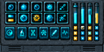 | — | — | — | — | — | — | — |
| Biology Controls | — | — | — | — | — | — | — | 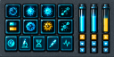 |
| Button Clusters Sliders | 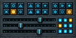 | — | — | — | — | — | — | 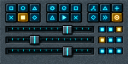 |
| Button Matrix Sliders | 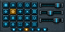 | 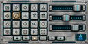 | 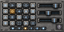 | 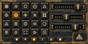 | 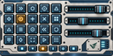 | 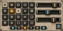 | 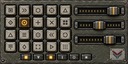 | 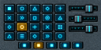 |
| Controls | 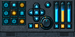 | — | — | — | — | — | — | — |
| Dial And Sliders | — | — | — | 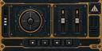 | 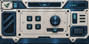 | — | — | — |
| Directional Controls | — | 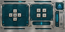 | 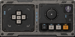 | — | 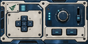 | 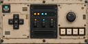 | — | — |
| Dual Controls | 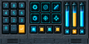 | — | — | — | — | — | — | — |
| Dual Dial Controls | — | — | — | 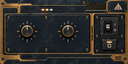 | — | — | — | |
| Dual Directional Controls | — | — | — | — | — | — | 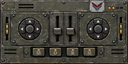 | — |
| Engineering Faders | 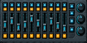 | 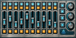 | 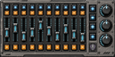 | 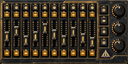 | 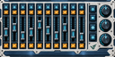 | 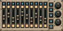 | 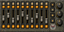 | 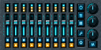 |
| Environment Controls | 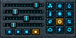 | — | — | — | — | — | — | 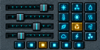 |
| Fader Bank | 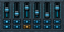 | 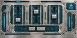 | 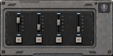 | 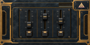 | — | — | 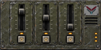 | 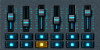 |
| Four Pads Fader | — | — | 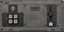 | — | — | — | — | — |
| Horizontal Adjusters | — | — | — | — | 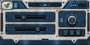 | — | — | — |
| Keyboard | 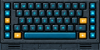 | 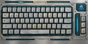 | 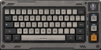 | 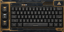 | 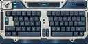 | 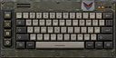 | 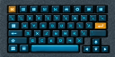 | |
| Keyboard Full | 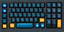 | — | — | — | — | — | — | — |
| Keyboard Touchpad | 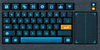 | — | — | — | — | — | — | — |
| Keypad And Dial | 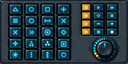 | — | — | — | — | |||
| Keys Touch Strip | — | — | — | — | — | — | — | |
| Latching Controls | — | — | — | — | — | — | — | |
| Latching Switches | — | — | — | — | — | — | — | |
| Lever Toggles | — | — | — | — | — | — | — | |
| Navigation Controls | ||||||||
| Paired Buttons | — | — | — | — | — | — | — | |
| Paired Faders Knob | — | — | — | — | — | — | — | |
| Pilot Controls | ||||||||
| Pilot Faders | — | — | — | — | — | — | ||
| Quadrant Dial | — | — | — | — | — | — | — | |
| Radar | — | — | — | — | — | — | — | |
| Ring Dial | — | — | — | — | — | — | — | |
| Rockers And Dial | — | — | — | — | — | — | — | |
| Rotary Bank | — | — | — | — | — | — | — | |
| Science Touchpad | — | — | — | — | — | — | — | |
| Selectors Guarded Toggle | — | — | — | — | — | — | — | |
| Sensor Controls | — | — | — | — | — | — | — | |
| Sequence Keys | — | — | — | — | — | — | — | |
| Switch Bank | — | — | — | — | — | — | — | |
| Twin Faders Transport | — | — | — | — | — | — | — |